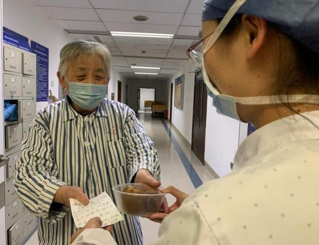
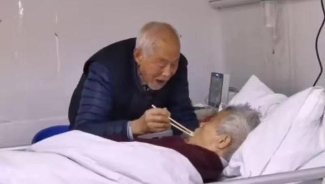

被销毁的100万支玫瑰
原文链接 备份链接 以下文章来源于市界 ，作者有趣有料的 灾难具有两面性。在惋惜花农遭受重大损失的同时，也侧面反映出来以云南花卉行业为代表的中国鲜花行业的问题。 文 | 李曙光 齐敏倩 编辑 | 廖影 “找我买花吧，一扎玫瑰20枝才二十 …

白朗宁曾说：“我是幸福的，因为我爱，因为我有爱。”在这场疫情面前，除了温馨的小爱，更有大爱无疆。
文 | 薛雨霏 赵琼 张遥 丁宁 林铭豪
编辑 | 沈小山
“无论何时何地，爱情始终都是爱情，只不过距离死亡越近，爱就越浓郁。”
——《霍乱时期的爱情》
这个情人节，有点难，但却异常暖心。
爱在瘟疫蔓延时，在疾病面前，我们真正看到了什么叫做“若是两情长久时，又岂在朝朝暮暮”，真正的爱是拦不住的。
爱情面前，年龄不是问题，病魔也不是
“亲爱的老伴，加油！”
浙江杭州市中医院，重症监护室门打开了。
“谢谢、谢谢；拜托、拜托！”住在老年病科的黄奶奶，一连说了五个“谢谢”、三个“拜托”，将孙爷爷最爱吃的几颗猕猴桃，和一封手写“情书”，拿给护士，拜托她转交给住在ICU的老伴。

黄奶奶拜托护士给老伴送情书和猕猴桃
“亲爱的老伴：我挺好的！您不要牵挂，儿子孙子都在家，10号星期一可能要上班了。大儿子是上班封闭，吃住在单位，轮到是两个星期。您要听护士的话，配合治疗，早日病除，合家团聚，加油！”

孙爷爷认真阅读情书
孙爷爷已有近90岁的高龄，伴有老年痴呆史，时而清醒时而糊涂，他的老伴儿黄奶奶住在本院的老年病科。
“每天的下午2:00-3:00是ICU的探视时间，黄奶奶就会带上老爷子爱吃的猕猴桃准时地出现在身边，两个人互相洗洗手、擦擦脸、写写字，互相交流交流。” 杭州市中医院重症监护室护士李柳燕在接受梨视频采访时说，每次两人见面结束准备回去时，黄奶奶都会用自己的额头，贴贴老伴的额头，说“我上去了，你要加油！我一直都在。”
ICU不能探视之后，黄奶奶就将每日的问候写在小纸条上，拜托护士传递问候与思念。每封“情书”都以“亲爱的老伴”开头，以“加油！”结束。

孙爷爷给黄奶奶回信
孙爷爷看到老伴传来的纸条，很是心焦，赶忙回信道：“老伴，你太累哩！快回去休息吧，我也回去，明天我们再见。（下午4：00见面）杰”。
材料、图来源/杭州综合频道
“老爷爷有的事情已经记不清了，但还记得老伴在对面。”
武汉汉口医院，87岁的冯爷爷守着83岁的沈奶奶，一起度过了2月14日情人节。
自2月8日老两口双双感染新冠肺炎，27床的冯爷爷每天都会举着吊瓶，去看望住在对面病房U1床的沈奶奶。即便是晚上，冯爷爷也要穿着棉服，和衣而睡，就是为了夜里方便起身，随时去探望老伴。
“护士，你能帮我用微波炉热一下饭吗？”2月8日下午1点，冯爷爷听说老伴吃不下饭后，小心翼翼地打开自己的饭盒，将花甲壳一颗一颗地剥下来，把肉连同炒鸡蛋一起放入手里的纸杯中，亲自给沈奶奶喂饭。

冯爷爷给老伴喂饭
到了夜里，冯爷爷也睡不着，起身接了半盆热水，走到护士站的另一侧，为老伴悉心擦洗身体。原来，沈奶奶卧床七年，饮食起居一直都是冯爷爷陪在身边。
中山大学附属第六医院重症医学科护师孙小玉的日记中记述道：有个老爷爷总是要出门，起初我并不明白为什么。后来才发现，是他的老伴住在那边床。原来爷爷装在纸杯里的好吃的，都是为了给亲爱的妻子；原来手里端的半盆热水，是要给老伴擦干净脸跟身子；原来半夜穿着厚衣服而睡，是为了起身方便，能够去看看妻子是否安睡。
“老爷爷有的事情已经记不清了，但还记得老伴在对面。”孙小玉接受梨视频采访时说。
来源：中山大学附属第六医院重症医学科护师孙小玉自述 武汉晚报、梨视频
哪怕近在咫尺也不相见，纵使质朴无华缺乏耀眼婚纱，但是我爱你
“没事，不要紧。”
隔离也让近在同城的普通人过上了“异地恋”的生活。
抖音用户@徐一个 的家离男朋友家仅仅相隔几栋楼，即便如此仍有许多天没有见面。他们在2月2日约定一起上楼顶打招呼，各自把手机镜头焦距拉到最大，向远处那个小人挥手。
相恋三年的高柏和启文是武汉的一对同性夫夫，2017年2月中旬，两人通过启文的妈妈相识，组成了彩虹家庭。疫情到来时一家人没能聚到一起。高柏在市郊陪伴父母和照顾孩子，启文则当时出现了咳嗽的症状，独自居家隔离，启文的爸妈则在汉口。一家人就在视频连线度过了除夕。

同性情侣在视频连线中度过除夕
启文的工作内容是医院电子器械的维护，封城初始时交通不便，医院物资也极度短缺，启文无法佩戴保护措施，只能顶着风险进入病房甚至呼吸科、ICU维护器械。担心伴侣危险，高柏给启文购买了口罩、免手洗洗手液等防疫用品快递到家里。最大的担心在于启文父亲的身体，因为癌症，老人需要持续化疗，疫情后化疗暂停，两人对此束手无策。孩子的疫苗也暂时无法接种。
这段时间，他们会每天入睡前打打视频电话，确认对方的身体、心理状况，让伴侣看看孩子。高柏曾经想回到家里陪伴启文，但启文没允许。启文反过来安慰高柏：“没事，不要紧。”
“等到战‘疫’胜利，我一定让你做最美的新娘！”
山西晋城，没有装扮华丽的婚车，没有浪漫的婚纱礼服，也没有满座的宾朋友，只有一对新人和一辆车，2月12日，在防疫一线的交警二大队民警李俊杰特意请了一天假，与自己心爱的新娘尚巧娜办了一场简单而“隆重”的婚礼。
这一天，李俊杰穿着红色的大棉服，拿着通行证来到新娘所住小区，面对门卫大爷的例行公事，李俊杰告诉大爷：”接媳妇呀，今天我们结婚“。随后，他紧接着解释：“师傅，您放心，现在防范疫情的关键时期，不能聚集，我都知道，我们不会给国家添乱的，让我接上新娘就好！”
接新娘出小区后，迎亲的工作也算完成了。在这个特殊的时期，两人皆是普通穿着，没有任何特殊的装饰，唯一应景的应该算是两人都带着口罩。
婚礼虽然简单，新娘尚巧娜说：“婚礼仪式什么的，其实没那么重要，只要这个人是他就好。他是警察，工作忙，尤其是这个特殊的时期，我都懂。”
将新娘接回家里，两位新人互戴了结婚戒指。李俊杰激动而又歉疚地对新娘说：“媳妇儿，今天这婚礼委屈你了，明天我还要去上班，你多担待。放心，等到战‘疫’胜利，我一定让你做最美的新娘！”

山西晋城夫妇举办简易婚礼
来源：山西晚报
今天，白衣天使们值得爱
“愿最平凡而伟大的白衣天使，情人节快乐！”
2月14日中午12点，正是武汉市江夏区侨亚隔离点的医护工作人员在酒店房间吃午饭的时候，一开门，李晴就看到了摆在门口的特别的情人节礼物——一张来自山水S酒店工作人员的手写“情书”，和一包费列罗巧克力。
李晴在接受记者采访时说，酒店里入住的大多是在附近隔离点工作的医护人员，总共有五、六十人，来自武汉市江夏区妇幼保健院、江夏区大桥卫生院、江夏区精神卫生中心等不同地区，还有从齐齐哈尔远道而来的驰援队伍，都收到了同一份“情人节礼物”。
“谢谢酒店一间一间敲门给我们送礼物，在坚持付出的不仅是我们医护人员，酒店工作者、后勤人员、保洁阿姨、厨房大叔，每一位都是值得敬佩和尊敬的人，谢谢你们！大家辛苦了！”李晴说。

山水S酒店为医护人员送去情人节礼物
“有爱才有希望”
情人节这天，一手video发布的一则视频《抗疫中催泪故事：有爱才有希望》的播放量已超过150万。
在这则视频里，面对即将驰援武汉的妻子，丈夫站在大巴车下，隔着玻璃用方言高喊“赵英明，你平安回来！我包一年的家务，我做！听到没有？”说到最后，声音里已带了一丝哽咽，“我老婆，我只希望她平安回来。”
“一开始我是不同意的，然后她就跟我说，她学了这么久，这辈子就只有这么一次机会”，佛山市高明区的辅警没忍住在镜头前吸了下鼻子，搂着未婚妻，拿着给她的枸杞水和行李箱，满眼都是眷恋。
“我女朋友知道我要去前线之后，自己主动申请要去前线，所以我很感动，会发现我们两个感情多么深”，他身旁的女孩子也跟着许愿希望两人都能平安回来。“回来我就娶你！”话音未落，这对90后河南护士紧紧相拥。
前线的医护人员夫妻档还有许多。10多天未回家，抗疫医生夫妻隔窗问候，“老婆，我过来看你了”，玻璃窗内外的两只手牢牢相贴；一堆夫妻在隔离房前偶遇被包得看不出原貌的爱人，在确认过对方身份后，短暂拥抱一下又开始各自工作。

认出彼此的夫妻在隔离房前短暂拥抱
95后的女护士在医院值守，面对窗外前来看望的爱人袒露出少见的脆弱，“我想抱抱”。“怎么办，我也想抱抱”，看着四处无人，他隔着玻璃窗和口罩亲吻辛苦的爱人。

95后女护士隔玻璃窗亲吻爱人
虽各自奋斗，但仪式感不能少。“我用回形针捏了一个像戒指一样的东西，只能用这个先代替一下。”援鄂护士在疫区单膝半跪在地，“可能今天没有鲜花，没有祝福，没有钻戒，但是今天有你有我”，把手里的钻戒戴进护士女友的无名指。
陕西渭南蒲城县，25岁的快递员张嘉鹏和重症监护室工作的护士妻子李盼，尽管同在一个城市奔波，从大年二十九开始两人已有20天没见过面。2月10日是夫妻两人结婚2周年的纪念日，张嘉鹏用纸板写了“结婚两周年快乐，盼你回家！”，站在医院门口和身穿防护服的妻子隔空过了纪念日，通话短短几分钟后又各自返回工作。
还有白衣天使和消防员在办公室里举办了五分钟的视频会议。一位同事举着平板问新娘：“陪伴他一生一世，直到永远，你愿意吗？”穿着防护服的新娘拍了下手，对着屏幕里的爱人斩钉截铁地回答“我愿意”。房内其他同事们鼓掌叫好“在这里我们一同祝他们白头偕老，永结同心”。
来源：一手video
白朗宁曾说：“我是幸福的，因为我爱，因为我有爱。”
在这场疫情面前，除了温馨的小爱，更有大爱无疆。今天，愿我们每一个人都是幸福的。
来源｜南都周刊
END
欢迎分享到朋友圈，如想取得授权请邮件：newmedia@nbweekly.com。如果想找到小南，可以在后台回复「小南」试试看哦~

原文链接 备份链接 以下文章来源于市界 ，作者有趣有料的 灾难具有两面性。在惋惜花农遭受重大损失的同时，也侧面反映出来以云南花卉行业为代表的中国鲜花行业的问题。 文 | 李曙光 齐敏倩 编辑 | 廖影 “找我买花吧，一扎玫瑰20枝才二十 …
原文链接 备份链接 播放音乐 | 阅读效果更佳 感谢 | 您对霍超LEGAL的关注、阅读与分享 每天在小房间里最经常的就是看看各种视频网站，获取一些信息，更是缓解一些无聊，不过在潜移默化中，让我细思极恐的是的越来越精确的大数据算法，推送的 …
原文链接 备份链接 - 疫 情 之 下 - 直到1月27日，我院发出接受社会捐赠的公告时，我才知晓，远在千里之外的我们，也没有防护物资了。年初一晚上去支援的我，在桌子边看见的防护用具，就是余下的所有物品。 ” 1 2020年1月25日， …
原文链接 备份链接 五、第一次入舱 13号的凌晨两点是第一次入舱，12号整个白天该吃吃该喝喝，心情倒没什么紧张，但就是一直睡不着，半片半片的量吃了总共两片舒乐安定都没效果，索性起来活动了。到了晚上八点，在床上翻来复去一个多小时终于沉沉睡 …
原文链接 备份链接 “ - 疫 情 之 下 - 这二十多天，我有足够的时间陪伴家人，正是有无数人在前方流泪、流汗、流血地付出，才有我们平静安心的生活，我会珍惜每一天。 ” 1 闹铃响了，又是新的一天，拉开窗帘，红彤彤的鸡蛋大小的太阳在滇池 …